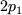

Before we give the complete syntax for an SGIF file, we finish the illustrative example that we started in Section 3.1.4 and Section 4.3 and show how to specify an input file appropriate for the problem of Section 2.5. The format is fairly similar to that for the SEIF file of Section 4. Once again, there are many possible ways of specifying a particular problem; we give one in Figure 5.2.
The file must always start with a GROUPS card, on which a name (in this case EG3) for the example may be given (line 1), and must end with an ENDATA card (line 10).
We next need to specify the names and attributes of any auxiliary quantities and functions that we intend to use in our high level description of the group functions. These are needed to allow for consistency checks in the subsequent high-level language statements and must always occur in the TEMPORARIES section of the input file. Line 3 indicates that we shall be using temporary quantities TWOP1 and the character R in the first field of this lines states that the quantity will be associated with a floating point (real) value.
We now make the actual definitions of the function and derivative values for the nontrivial group type used; we recall that there is a single nontrivial group type PSQUARE and that its attributes (name of group-type variable and parameter) have been described in the SDIF file set up in Section 3.1.4. This definition takes place within the INDIVIDUALS section. The presence of the character T in field 1 of line 5 announces that the data for the group type PSQUARE is to follow. All the data for this group must be specified before another group type is considered. We note that the quantity  occurs in both first and second derivatives of the group type function and so the auxiliary quantity TWOP1 is set on line 6 to hold this value. The first field of a line on which such an assignment is made contains the character A. The value (line 7), its first derivative (line 8) and second derivative (line 9) with respect to the group-type variable are now given. A Fortran expression for these values occurs in field 7 on each of these lines; the lines contain the characters F, G and H respectively in field 1 for such assignments.
If there had been more than a single group type with one or more expressions in common, these expressions could have been assigned to previously attributed quantities in a GLOBALS section. This section would then have appeared between the TEMPORARIES and INDIVIDUALS sections.